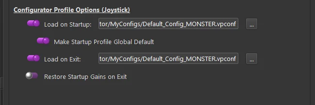
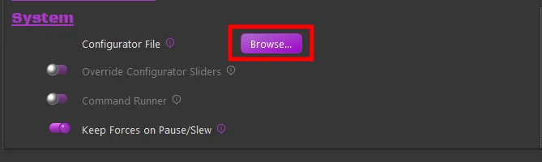
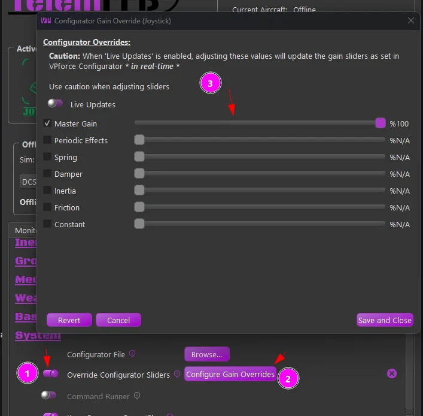

1. VPforce Configurator Integration¶
Different aircraft often need different VPforce Configurator settings on the device. Doing that manually — open Configurator, load a profile, apply — works, but it is tedious. TelemFFB automates this with two methods that you can use together or separately:
- Profile assignment - push a whole Configurator profile (a
.vpconffile, hereafter “vpconf profile”) to the device when an aircraft loads. - Gain overrides - adjust individual effect-type gains per aircraft, as if you had moved the sliders in Configurator yourself.
1.1 How TelemFFB Manages Device Gains¶
Everything in this page follows from four rules:
- TelemFFB always remembers a baseline: the gain values read from the device when TelemFFB started, updated whenever any vpconf profile is pushed (startup profile or aircraft/class/sim profile alike).
- When an aircraft with gain overrides loads, the overrides are applied after any vpconf profile push, so overrides always win over profile gains.
- When an aircraft without gain overrides loads, the device is reverted to the baseline.
- On exit, if Restore Startup Gains on Exit is enabled in System Settings (it is off by default), TelemFFB re-pushes the gains it read at startup, leaving the device as it found it. An Exit profile, if configured, is pushed regardless.
The worked examples at the bottom of this page show these rules in action.
1.2 Assigning vpconf Profiles¶
Profiles can be assigned at several levels of specificity.
Profiles are validated against the target device
Whenever you select a vpconf profile, in the System Settings selectors or in a per-aircraft setting, TelemFFB checks the profile’s USB PID and device identifier against the device it would be pushed to, and rejects the selection on a mismatch. This prevents accidentally overwriting one device with another’s configuration (a pedal profile onto your joystick, for example), and protects against a profile whose PID/identifier changes would break the device’s reconnection.
1.2.1 Startup/Exit profiles¶
In System Settings you can select profiles that TelemFFB always pushes when it starts and when it exits. A typical use: keep a low-force profile on the device while it sits idle, and load your flying profile whenever TelemFFB starts.

1.2.2 Global Default profile¶
The Global Default is not a separate profile; it is an option that reuses the startup profile as the fallback. With it enabled, whenever a loaded aircraft has no profile assigned at any level, TelemFFB re-pushes the startup profile. This is what returns the device to a known state after flying an aircraft that did push a custom profile. With it disabled, the previous aircraft’s profile simply stays on the device.
1.2.3 Assigning a configurator profile to a specific aircraft¶
With the aircraft loaded (or the sim, class, or aircraft selected in the offline editor), use the Configurator File selector in the Settings tab’s System section and browse to the vpconf profile. The assignment is stored in your user configuration; every time that aircraft loads, TelemFFB pushes the profile to the device.

1.2.4 Precedence¶
The most specific assignment wins:
| Priority | Level | Behavior when the aircraft loads |
|---|---|---|
| 1 | Specific aircraft | Its profile is pushed |
| 2 | Aircraft class (helicopter, prop, jet, …) | Class profile is pushed |
| 3 | Simulator (DCS, MSFS, …) | Sim profile is pushed |
| 4 | Global Default (enabled) | The startup profile is re-pushed |
| - | Global Default (disabled) | Whatever is on the device stays |
Independent of this hierarchy: the Startup/Exit profiles always push at startup/exit, and gain overrides (below) always apply last, on top of whichever profile won.
1.3 Dynamic Configurator Gain Overrides¶
In addition to (or instead of) pushing a whole vpconf profile, you can override the individual effect-type gains per aircraft. As with any TelemFFB setting, overrides can be configured at the sim, aircraft-class, or specific-aircraft level: sim and class via the Offline/Global Sim/Class Editor, a specific aircraft most easily from the Settings tab while it is loaded.
1.3.1 Configuring the gains¶
- Enable the Override Configurator Sliders toggle (1)
- Press the Configurator Gains Override button (2)

Tick the checkbox for an effect type and adjust its slider. Changes take effect almost immediately; there is a short settle delay so the device is not flooded with commands while you drag. With Live Updates enabled you feel each change as you make it.
- Revert - unticks all override checkboxes and returns the gains to the stored baseline (the gains read at startup, or after the last vpconf push).
- Cancel - undoes everything changed since the window opened, then closes it.
- Save and Close - writes the overrides to your user configuration for the currently loaded aircraft.
1.3.2 Worked examples¶
Each example tracks a single gain (spring) from TelemFFB startup, through two aircraft, to exit. Device is what is on the device; Baseline is what TelemFFB remembers (rule 1). The exit rows assume Restore Startup Gains on Exit is enabled; with it disabled (the default), the last-pushed gains simply remain on the device.
Example 1 - override only. Device starts at 50%. No startup profile. Aircraft A has a 100% spring override; aircraft B has nothing configured.
| Event | Device | Baseline |
|---|---|---|
| TelemFFB starts, reads device | 50% | 50% |
| Aircraft A loads → override applied | 100% | 50% |
| Aircraft B loads → revert to baseline | 50% | 50% |
| Exit → startup gains restored | 50% | - |
Example 2 - startup profile + override. As above, but a startup profile with 75% spring is configured.
| Event | Device | Baseline |
|---|---|---|
| TelemFFB starts, reads device | 50% | 50% |
| Startup profile pushed | 75% | 75% |
| Aircraft A loads → override applied | 100% | 75% |
| Aircraft B loads → revert to baseline | 75% | 75% |
| Exit → startup gains restored | 50% | - |
Example 3 - profile and override on the same aircraft. Startup profile 75%. Aircraft A has a vpconf profile with 80% spring and a 40% spring override; aircraft B has nothing.
| Event | Device | Baseline |
|---|---|---|
| TelemFFB starts, reads device | 50% | 50% |
| Startup profile pushed | 75% | 75% |
| Aircraft A loads → its profile pushed | 80% | 80% |
| … then its override applied (rule 2: overrides win) | 40% | 80% |
| Aircraft B loads, Global Default enabled → startup profile re-pushed | 75% | 75% |
| (or) Aircraft B loads, Global Default disabled → revert to baseline | 80% | 80% |
| Exit → startup gains restored | 50% | - |
Note
The push when aircraft B loads happens even when those values are already on the device; it is what clears aircraft A’s gain override.